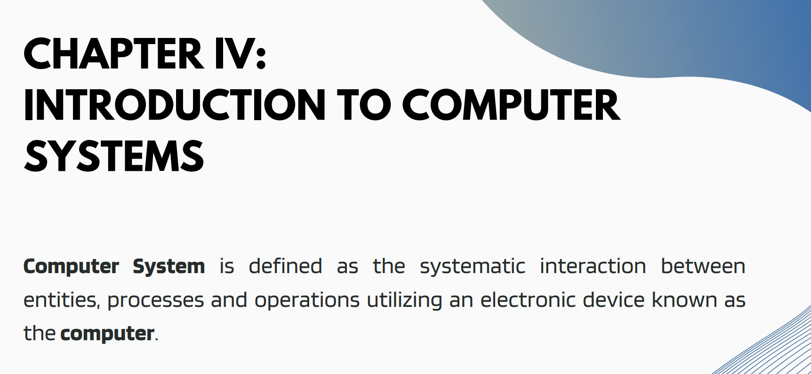

This Lesson I learned about TECH TIMELINERESEARCH like Pascaline also called Arithmetic Machine, the first calculator or addition machine to be produced in any quantity and actual used. Pascaline design and built by the French mathematician Blaise Pascal on 1642 and 1644. It could only do addition and subtraction.
Part of modern life, and new applications are introduced every day. The use of computer technologies is also a common place in all types of organizations, in academia, research, industry, government, private and business organizations. NETWORK ENGINEER- Plans for the installation or expansion of local or wide-area computer networks. Performs complex configuration of servers, hubs, routers, and other network conmunications equipment. Writes scripts or programs to automate network operations.
CHAPTER III: This lesson I learned the FOUR PHASES OF THE CYCLE TO PROCESS INFORMATION. INPUT- Computer receives data and instructions. Process- Computer applies instructions to data to produce information (organized Data). Storage- Saving the information for a subsequent use or use in future. Output- Computer sends information to people in a usable format.
This lesson I learned the 4 Components of a Computer system. Hardware- Hardware refers to the physical component that makes up a computer system and can be classified into as. SOFTWARE- Is a collection of electronic instructions that programmers write using a programming language and that a computer’s CPU can interpret to carry out a specific task. SOFTWARE- System software refers to the files and programs that make up your computer's operating system. System files include libraries of functions, system services, drivers for printers and other hardware, system preferences, and other configuration files. DATA WARE- generally refers to software and systems used for data management, such as databases, data warehouses, data analytics tools, and related software applications. These tools are used to store, organize, manipulate, and analyze data.
This lesson I learned any types of cybercrimes and cybercriminal. IDENTITY THEFT- Done by a perpetrator to commit fraud for financial gains through fake credentials and by purporting to be someone else. MALICIOUS SOFTWARE- or malware, is like a digital virus. Its software designed to harm your computer, steal your data, or cause trouble without your consent. i.e., computer virus. THEFT- Another common cybercrime which some internet users are not even aware of is piracy. I.e., Illegal downloading. CYBER BULLYING AND STALKING- s when someone uses the internet or digital devices to harm, unwanted online attention that may include threats.
Learning HTML and CSS has become my favorite topic because it empowers me to tackle procrastination, especially regarding our final project the personal website One of the aspects I found particularly challenging was the transition from theoretical understanding to practical application. While I could comprehend the theory behind HTML and CSS, implementing them to create functional and visually appealing web pages was initially overwhelming..